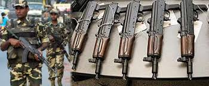
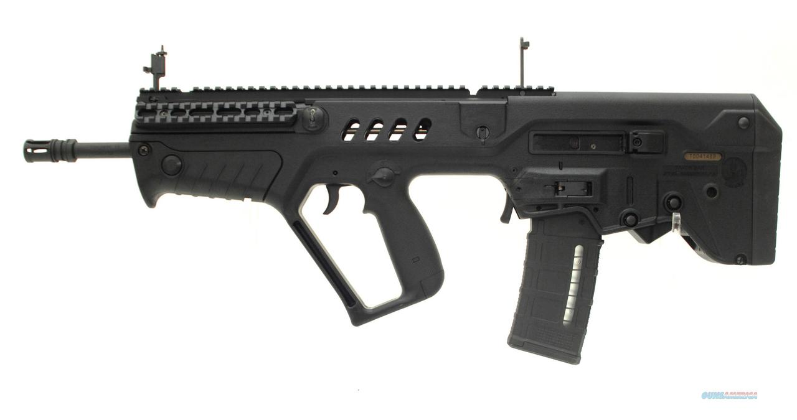
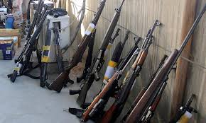
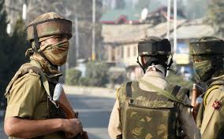
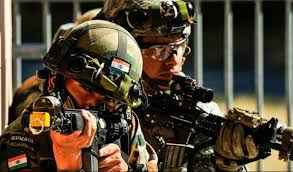

Names of Equipments
  
- MP-5 Rifles: Though some of these are present in the CoBRA battalions, ideally we need at least 90 per battalion.
- Glock Pistols.
- MGL (Multi Grenade launcher): A big ‘revolver’ looking grenade launcher that is being used by the Rashtriya Rifles in Kashmir for counter-insurgency operations. This is a comparatively light weapon, which works on the principal of ‘revolver’ and grenades can be fired very easily with the aimed fire provisions.
- Modified version of Russian made Automatic Grenade Launcher System (AGLS). Presently, CRPF has AGS-30 which is bulky — 10.5kg without ammunition. Also it cannot be fired without mount which weighs around six kg. With mount and ammunition it weighs over 20kg.
- X-95 Rifles: Though CoBRA battalions have a few of these, there is a requirement for more.
- Frigates
- MMGs: Light weight medium machine guns.
- Corvettes
- Mine countermeasure vessels
- Torpedo recovery vessels
- Offshore patrol vessels
- Patrol vessels
- Lightweight bullet-proof head gear or helmets.
- Light weight 360 degrees bullet-proof jackets
- Support ships
Training
When you passed out the process of selection, then there will be the training of navy. The main motive of this training to boost up the individual for life in the navy. The training of navy is in the form of academic and physical as well. Once you join the training, it is the responsibility of the navy to take care of all the requirements of the person like clothing, fully nutritious food, living, health etc.

Activities
Officers and Sailors alike approach a few recreational offices. As an officer or mariner taking a shot at a ship or a base, it's not simply 'all work and no play'. You will have the chance to work and live with other administration individuals, and also rest and loosen up far from the activity.

Operations
Four major alignment of Paramilitary Forces with army
- Army movement on the borders is undesirable as it indicates preparation for war. Thus, BSF takes on border guarding in India. Likewise, in Pakistan, Rangers are deployed at borders and not the Pakistan army.
- During wartime, few BSF men partake in fighting alongside Army as they have better knowledge of the border terrain and thus they do not retreat with others to help the army.
- Only the LOC stretch in Kashmir is also guarded by the Army where BSF is under operational control of the Army.
- In such areas where BSF is in operational control of army, you’ll see situations where BSF is a mere puppet for the army guys, such as situations where BSF provided ROP duty on roads in Kashmir for Army.